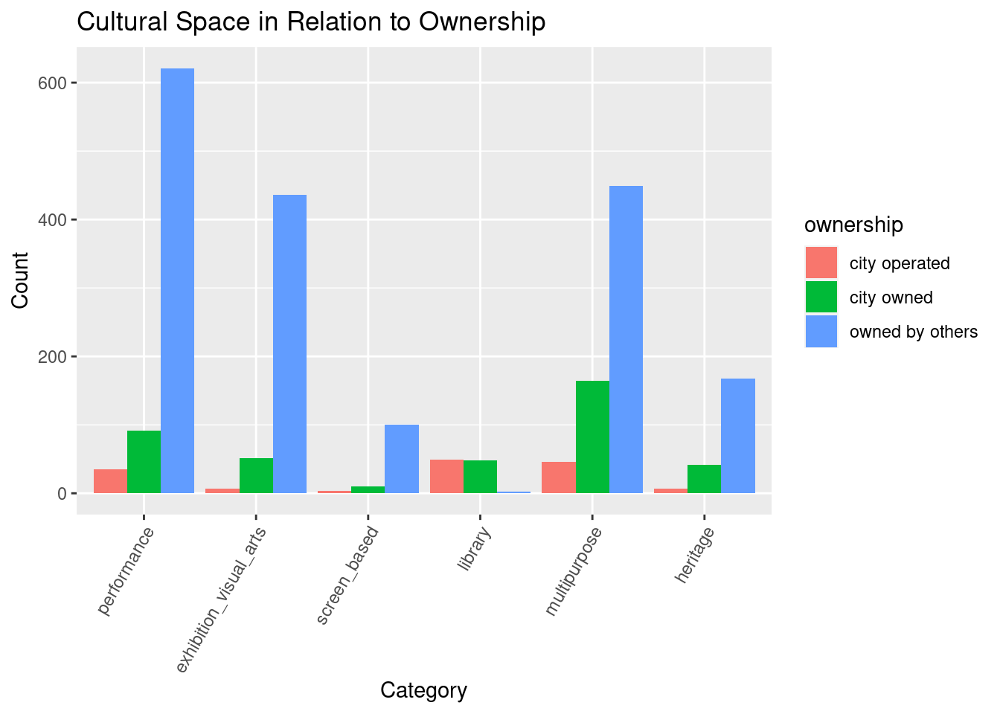

Rows: 1397 Columns: 7
── Column specification ────────────────────────────────────────────────────────
Delimiter: ","
chr (1): ownership
dbl (6): performance, exhibition_visual_arts, screen_based, library, multipu...
ℹ Use `spec()` to retrieve the full column specification for this data.
ℹ Specify the column types or set `show_col_types = FALSE` to quiet this message.
For the graphs, it would be best to show whether or not there is a difference in the ‘type’ of cultural space (performance, visual arts exhibition, screen-based, library, multipurpose, heritage) based on whether the space is city-owned or by the people.
category <-c('performance', 'exhibition_visual_arts', 'screen_based', 'library', 'multipurpose', 'heritage')# since splitting into grouped bars, its best to use gather to combine to keep countgrouped_data <-gather(cultural_spaces, key ="category", value ="count", -ownership)# handle the category elementsgrouped_data$category <-factor(grouped_data$category, levels = category)# handle the count elements, need this for the summarize since not everything is numericgrouped_data$count <-as.numeric(grouped_data$count)# summarize and count individual values before putting into plotdf <- grouped_data |>group_by(category, ownership) |>summarize(total =sum(count, na.rm =TRUE)) # remove 'NA' values
`summarise()` has grouped output by 'category'. You can override using the
`.groups` argument.
ggplot(df, aes(x = category, y = total, fill = ownership)) +geom_col(position='dodge') +# dodge is for grouped plotlabs(x ='Category', y ='Count') +ggtitle('Cultural Space in Relation to Ownership') +theme(axis.text.x=element_text(angle=60, hjust=1))

As you can see, a majority of the cultural space is owned by others, followed by city owned, then by city operated. It is also evident that performance and multipurpose cultural spaces are the most frequent cultural space type of the bunch. An interesting analysis is that library is completely owned and operated by the city, not a single branch is owned by others.